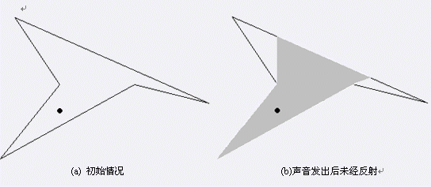
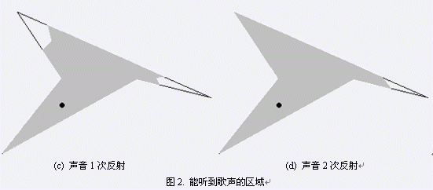

第一行包含4个整数n，k，x，y分别表示小屋的墙角数、最多反射的次数以及牧羊女的坐标
（牧羊女所在位置保证在屋内且至少离墙1个单位）。
以下n行每行两个整数x, y，表示第i个墙角的坐标。
墙角按照顺时针或逆时针排列。
 图1.
图1.

(a) 初始情况 (b)声音发出后未经反射
 (
c) 声音1次反射 (d) 声音2次反射图2. 能听到歌声的区域
输出文件仅包含一个实数L，表示能听到歌声的墙的总长度。保留两位小数。
【样例输入1】
5 0 100 135
20 200
200 100
300 125
40 10
100 100
【样例输入2】
8 1 25 15
0 0
0 20
30 20
30 0
20 0
20 10
10 10
10 0
【样例输出1】
469.86
【样例输出2】
106.67鸣谢刘汝佳先生授权使用